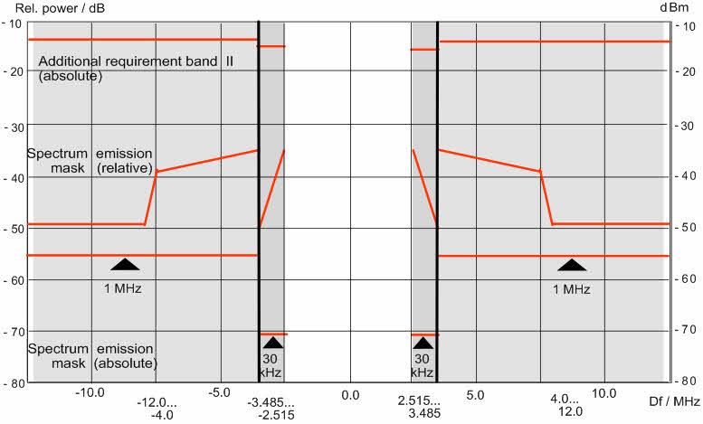

Spectrum Emission Mask
The spectrum emission mask is a template to limit the out-of-band emissions in a frequency range around the center carrier frequency. Spectrum emission mask conformance tests are specified e.g. for CDMA standards. The spectrum emission mask complements the requirements for the adjacent channel power.
In the figure below, the red lines represent the spectrum emission mask for UL WCDMA signals (3GPP/FDD 3.84 MHz). The emission mask comprises different sections. In addition to the limit lines, the standard specifies IF filter settings for each section.

Spectrum emission mask (WCDMA/FDD 3.84 MHz)